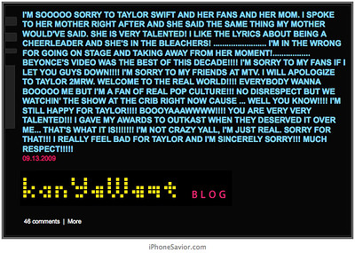

By Luke Leonard
While the new destination, KanyeWest.com, initially served as a blog for a short period of time, the old spot was the place where Yeezy consistently let loose about everything. Fashion, art, architecture, movies, and anything else that was rattling around his brain. He currently posts on his twitter.

Albums
Homepage
Kanye's Social
About Kanye